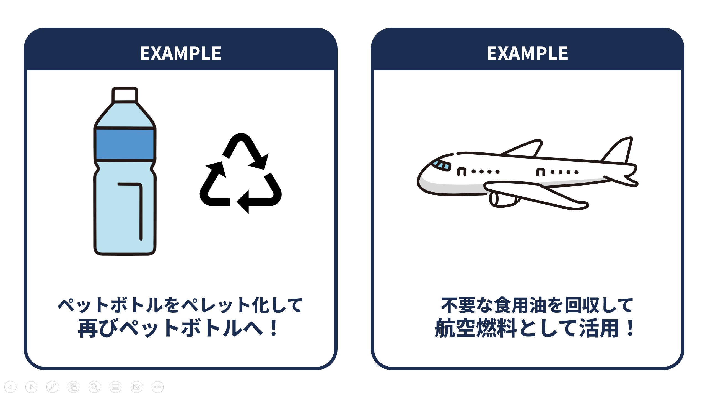
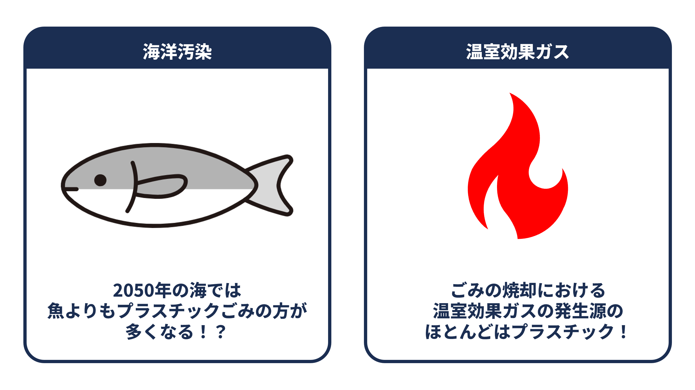
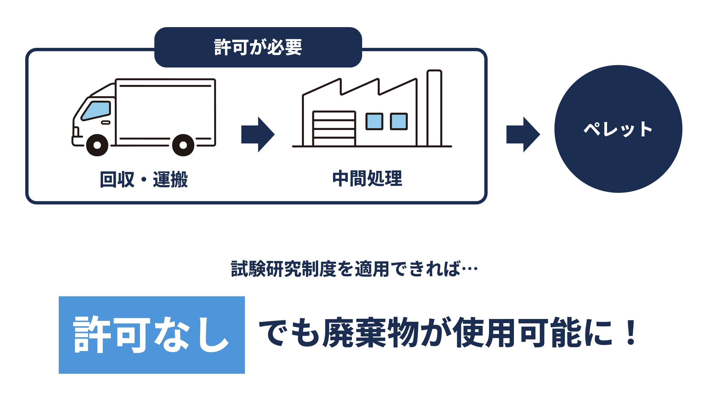
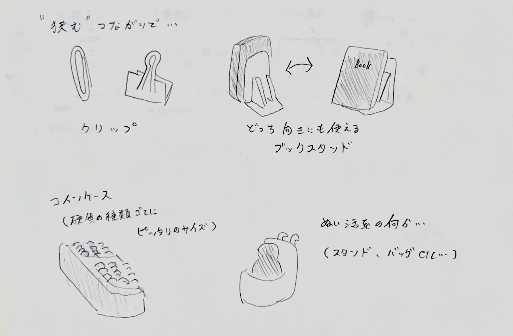

横浜市の取り組み
横浜市では、かねてよりグリーン社会の実現に向けた取り組みがなされてきました。
そして、みなとみらい21地区は、「脱炭素先行地域」 に選ばれています。
電力や熱の脱炭素化に加え、資源循環の推進などに力が入れられています。
今までのプロジェクトの例としては、ペットボトルの水平リサイクルや、廃食油を利用した航空燃料などがあります。
ペットボトル水平リサイクル
廃食油を利用した航空燃料
そして、みなとみらい21地区は、
電力や熱の脱炭素化に加え、資源循環の推進などに力が入れられています。
今までのプロジェクトの例としては、ペットボトルの水平リサイクルや、廃食油を利用した航空燃料などがあります。

ペットボトル水平リサイクル
廃食油を利用した航空燃料
プロジェクト概要
今回、携わらせていただくプロジェクトは、捨てられてしまうクリアファイル を回収し生まれ変わらせるものです。
回収したクリアファイルからできたペレットを素材に、3Dプリンターを用いて作るプロダクトを考えていきます。
昨今、クリアファイルをはじめとしたプラスチックが環境に与える悪影響が世界で問題視されています。
プラスチックごみによる海洋汚染 や、焼却時に排出される温室効果ガス などさまざまです。
持続可能な社会を実現するためには、プラスチックという資源を循環させる仕組みづくりが必要なのです。
通常、いらなくなったものは廃棄物として扱われるため、循環の過程では許可が必要となります。
しかし、廃棄物を利用する試験研究制度を活用すれば、一定の条件を満たすことで、許可なしでも廃棄物を利用 することができるのです。
このような制度を活用することで、さまざまな企業や団体の取り組みを支援することにつながります。
プラスチックの海洋汚染
温室効果ガスの排出
試験研究制度
回収したクリアファイルからできたペレットを素材に、3Dプリンターを用いて作るプロダクトを考えていきます。
昨今、クリアファイルをはじめとしたプラスチックが環境に与える悪影響が世界で問題視されています。
プラスチックごみによる
持続可能な社会を実現するためには、プラスチックという資源を循環させる仕組みづくりが必要なのです。

通常、いらなくなったものは廃棄物として扱われるため、循環の過程では許可が必要となります。
しかし、廃棄物を利用する試験研究制度を活用すれば、一定の条件を満たすことで、
このような制度を活用することで、さまざまな企業や団体の取り組みを支援することにつながります。

プラスチックの海洋汚染
温室効果ガスの排出
試験研究制度
アイデアスケッチ
